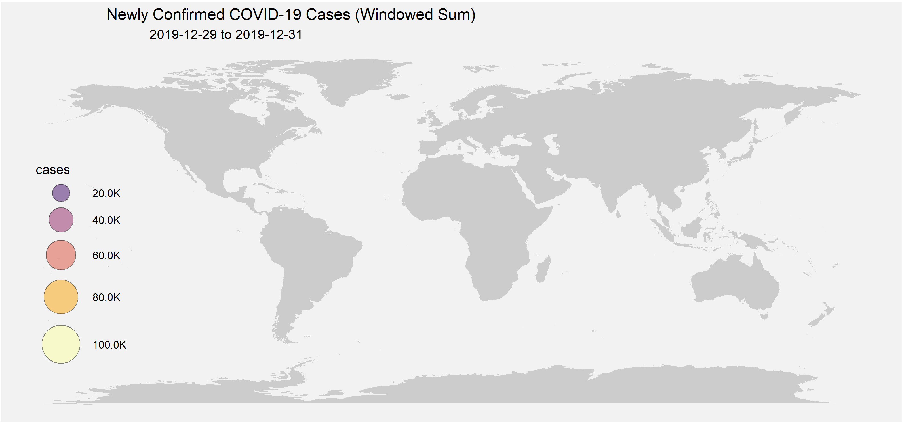

Over the past few weeks the Coronavirus (or more precisely COVID-19) outbreak has been consistently the centre of attention. This pandemic has been met with an unprecedented response, with countries around the globe enforcing lock-down and social distancing measures in an attempt to slow and/or reduce its spread.
As a data science student, I’ve been interested in how much attention has been placed on the data itself. A steady stream of new data is communicated by media either in raw form or by visualisations to satisfy the public interest.
I started doing some analysis and I thought I’d share some visualisations I’ve made.
A few data sources are available, although the ones provided by John Hopkins, ECDC and WHO seem to be the most popular. I initially used the former source, although I changed to using the ECDC data due to consistency issues. A good discussion of the datasets can be found in here.
Note that this blog post is intended for interest only. Unlike many posts I’ve read, this isn’t about prediction or to argue which strategy or behaviour is best to mitigate the outbreak. I think too many enthusiasts have been overconfident in their interpretation of the data, which can be harmful given the seriousness of the situation. It’s best to listen to the professional scientists studying this, whether that be epidemiologists or from other fields. If you live in the UK, please follow the advice given by the NHS and UK Government!
Note that I plan to update this page frequently to include recent data. This page currently has data up to 2020-04-02.
First, a simple interactive plot of confirmed cases and fatalities against time. It’s important to remember that the data is for confirmed cases only. Due to limited testing the actual number of cases is considered to be much larger than the number of confirmed cases.
Bubble plots have been popular to show the geographical spread. I wanted to visualise the spread of the disease with rate of new cases over time rather than just the total to date. Here is an animation of new confirmed cases against time and region. I used a rolling window to get 3-day sums to smooth out any daily jumps in the dataset caused by an artefact in the data collection process.

Finally an interactive choropleth map. Regions are coloured according to a quantile ranking of the number of confirmed cases per million population. Since countries differ in their attitudes and capabilities for testing, it is important to be cautious when making comparisons between countries.